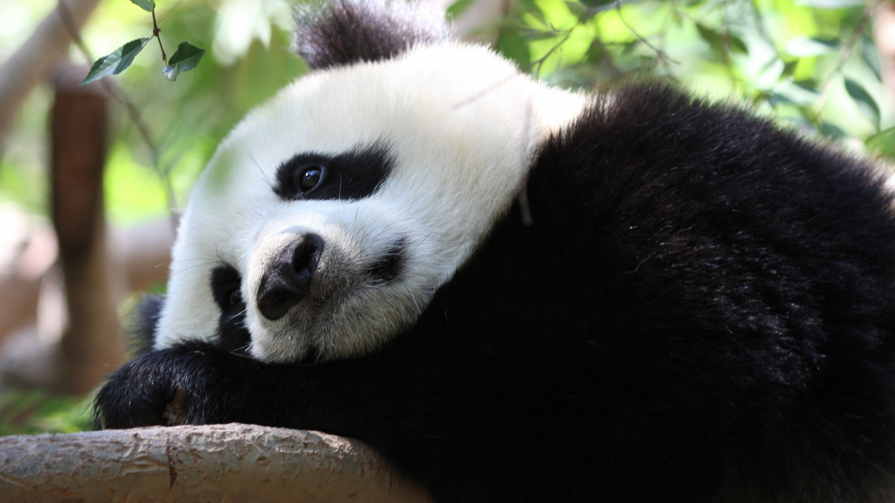
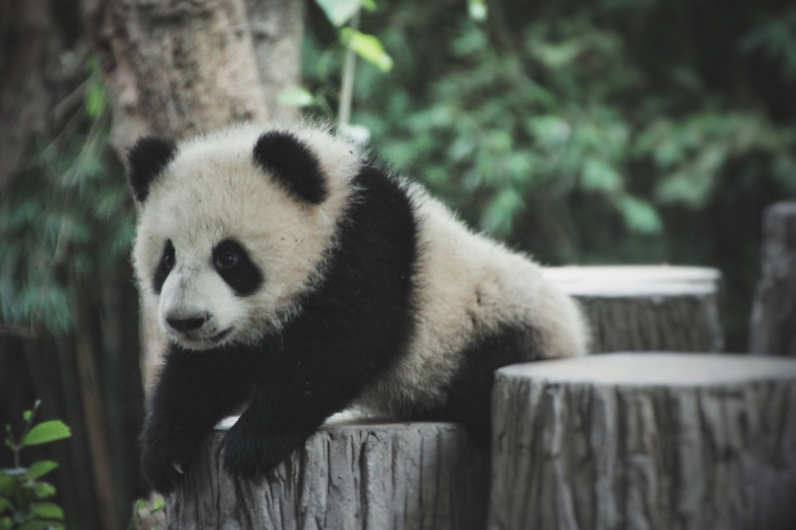
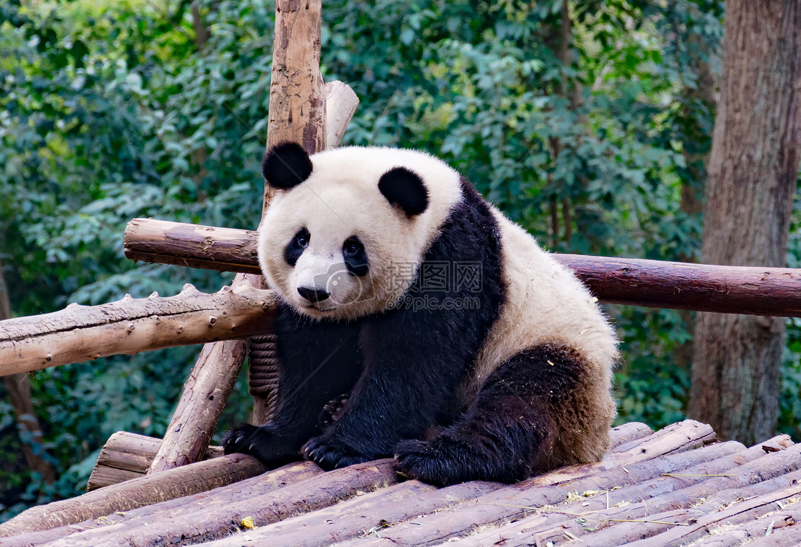
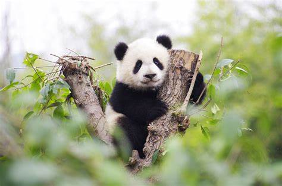
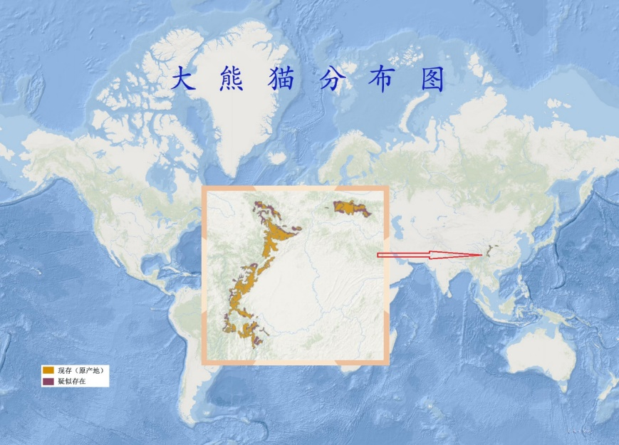

大熊猫（学名：Ailuropoda melanoleuca）：属于熊科、大熊猫属的哺乳动物。仅有二个亚种。雄性个体稍大于雌性。体型肥硕似熊、丰腴富态，头圆尾短，头躯长1.2-1.8米，尾长10-12厘米。体重80-120千克，最重可达180千克，体色为黑白两色，脸颊圆，有很大的“黑眼圈”，标志性的内八字的行走方式，也有解剖刀般锋利的爪子。大熊猫皮肤厚，最厚处可达10毫米。黑白相间的外表，有利于隐蔽在密林的树上和积雪的地面而不易被天敌发现。
大熊猫体型肥硕似熊、丰腴富态，头圆尾短，头躯长1.2-1.8米，尾长10-12厘米。体重80-120千克，最重可达180千克，饲养的熊猫略重，一般雄性个体稍大于雌性。头部和身体毛色黑白相间分明，但黑非纯黑，白也不是纯白，而是黑中透褐，白中带黄。秦岭地区的个体偏大，体毛粗糙，腹毛略呈棕色色泽。岷山（尤以青川平武）则个体较小，体毛也较前者为细，腹毛棕色不明显，但凉山的个体并不偏小。黑白相间的外表，有利于隐蔽在密林的树上和积雪的地面而不易被天敌发现。相对锋利的爪和发达有力的前后肢，有利于大熊猫能快速爬上高大的乔木。 大熊猫皮肤厚，最厚处可达10毫米。身体不同部分的皮肤厚度也不一样，体背部厚于腹侧，体外侧厚于体内侧，皮肤的平均厚度约为5毫米，并且色白而富有弹性和韧性。 大熊猫的视觉极不发达。这是由于大熊猫长期生活于密密的竹林里，光线很暗，障碍物又多，致使其目光变得十分短浅。此外由于它的瞳孔像猫一样是纵裂的。因此，当夜幕降临的傍晚，它们还能活动。
大熊猫栖于中国长江上游的高山深谷，为东南季风的迎风面，气候温凉潮湿，其湿度常在80%以上，它们是一种喜湿性动物。大熊猫生活的6块狭长地带，包括岷山、邛崃山、凉山、大相岭、小相岭及秦岭等几大山系，横跨川、陕、甘3省的45个县（市），栖息地面积达20000平方公里以上，种群数量约1600只，其中80%以上分布于四川境内。它们活动的区域多在坳沟、山腹洼地、河谷阶地等，一般在20°以下的缓坡地形。这些地方森林茂盛，竹类生长良好，气温相对较为稳定，隐蔽条件良好，食物资源和水源都很丰富。 大熊猫生活在海拔1200米-4100米，主要在2600-3500米的茂密竹林里，那里常年空气稀薄，云雾缭绕，气温低于20℃。一些其他的因素也会影响野外大熊猫的分布和密度：竹子、地形、水源的分布，是否有藏身处和哺育幼仔的巢穴以及山势等。人为的干扰是现今影响大熊猫分布的主要因素。 大熊猫具有不惧寒湿，从不冬眠的性格。哪怕气温在-4-14℃它们仍然穿行于被白雪压得很厚的竹丛中。它们也不怕潮湿，总爱在湿度80%以上的阴湿天地里生活。
大熊猫每天除去一半进食的时间，剩下的一半时间多数便是在睡梦中度过。在野外，大熊猫在每两次进食的中间睡2-4个小时，平躺、侧躺、俯卧、伸展或蜷成一团都是它们喜好的睡觉方式。在动物园里面，饲养员每天两次定时给它们喂食，所以大熊猫其他的时间都用来休息。即使在睡觉的时候大熊猫看起来也很可爱。它们非常的灵活，能够把它们笨重的身体摆成各种各样的姿势。最喜欢的姿势便是腿撑在树上，并用手遮住眼睛。大熊猫最可爱的特点是它那胖嘟嘟的身体和他那内八字慢吞吞的行走方式。这是因为它们生活的环境里面，有充足的食物，没有天敌，没必要行动很快。但是，正是它这种慢吞吞的动作使它能够保存能量，以适应低能量的食物。它们有时候也会爬树侦察情况，逃避入侵者，或是打盹。
